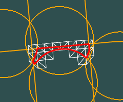

|  |
This convex is a complex intersection of
some halfspaces. The actual region resulting is outlined in red. |
CONVEX CARTESIAN
-0.996425471013994 -0.084475899887033 -0.000321018403806 0.999661878489243
-0.021731872810911 -0.001901292508142 -0.999762027079909 0.0
-0.021731872810911 -0.001901292508142 0.999762027079909 0.0
0.089125151859617 -0.996020435184942 0.0 0.0
0.993154765232004 0.116805433281792 0.000321018403806 -0.999661878489243
0.993231627341476 0.107582025318876 -0.043784041349471 -0.999661878489243
0.995617234108916 0.082999813755039 0.043097030778705 -0.999661878489243
10997280538624, 10997330870271 11004847063040, 11004863840255 11004880617472, 11004914171903 11009091698688, 11009142030335 11009209139200, 11009343356927 14844497494016, 14844547825663 14849983643648, 14850017198079 14850033975296, 14850050752511 14858456137728, 14858573578239 14858640687104, 14858707795967 |